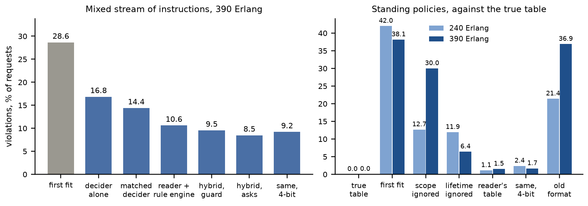

Every number is copied from the results file named next to it. The long account of the first two
rounds is in docs/report_rounds_1_2.md; every result with its source file is in
docs/results_overview.md.
Operators of optical transport networks state policy in plain language ("the Zurich–Milan span is under maintenance", "for 400G services, avoid Basel until further notice"), in the language they work in. We built a blueprint in which Apertus 8B reads such a policy while the network still follows fixed, checkable rules. Apertus translates the sentence once into one line of a small policy language; a rule engine enforces that line for every request the policy covers, for as long as it holds. A second reader translates it again, and the operator is asked when a request would be decided differently under the two readings. An instruction outside the language goes to a fine-tuned Apertus that decides the request itself, with its choice checked against the part the language carries. The line is also a TAPI 2.1.3 constraint, the object a transport SDN controller takes. An operator console shows the network on a map with a feed of what the model does: it reads back every policy, previews its effect on a copy of the network before it is applied, names conflicts with the policies in force, pauses the stream to ask when two readings would decide a request differently, and keeps an audit trail per lightpath. Everything runs on a laptop GPU.
Measured in the Optical Networking Gym simulator on sentences written by separate AI instances in four languages: the reader is right on 94.8 % of 2,078 instructions, on clause pairs it never saw together as on trained pairs (96.5 against 95.6 %; triples three points lower); its decisions comply in 99.6 %, those of the model that decides alone in 91.1 % (English probes). With scope and lifetime added, a reader trained on the same recipe is right on 93.5 % of 800 blind policy sentences, and in closed loop the policy table built from its readings breaks 1.1–1.5 % of requests against the true table, where ignoring scope breaks 13–30 %, ignoring lifetime 6–12 %, first fit 38–42 %. On a mixed stream the hybrid that asks breaks 8.5 % of requests (decider alone 16.8 %, first fit 28.6 %); asking only when a request tells the readings apart puts 16 % fewer questions at the same error for the job translator, and a third fewer for 0.35 points on the laptop hybrid. The weak points are measured too: the reader silently applies 47 % of instruction types no component was ever shown, and the phrase "to Prague" is a scope to the new reader and a destination to the operator. The 4-bit laptop build, the one a judge can run, is one to four points weaker on every measure and is reported beside the job figures throughout.
operator policy ──> reader 1 ─┐ same reading, or no request ┌─ in the language ──> policy table ──> rule engine ─┐
(any language) ──> reader 2 ─┴─ tells them apart? ── yes ─────┤ (scope, lifetime, conflicts, report) ├─> allocation
│ no: ask (show the difference) └─ outside it / in part ───────────> decider (guarded) ┘
console: map, feed of the model's steps, read-back, TAPI constraint, preview on a copy of the network, questions, audit
request and network state ───────────────────────────────────────────────────────────────────────────────┘
src/sim.py): Optical Networking Gym, preset jocn_benchmark (nobel-eu, 28
nodes, 41 links, five candidate paths per request, 320 slots, six modulation formats); a Swiss
topology of 24 cities and 33 links (data/topologies/swiss.xml, built from public geography)
loads through the same code. Each request is a request view (src/view.py).src/spec.py): avoid=Berlin-Prague,Paris; via=Lyon; hops=4; km=any;
path=any; prefer=km,load; scope=rate:400; until=6h; rest=none. Links and nodes to avoid, a
node to pass through, limits, a candidate by number, preferences in order; scope (every
request, a bit rate, requests from or to a node) and until (hours, or until withdrawn) make
a sentence a standing policy. rest=more marks a part not carried; unsupported and
no_instruction are the refusals; a name that is not a node makes the line unresolved.src/translate.py): Apertus 8B with a LoRA adapter, decoding under a grammar
built from the node list (src/grammar.py); the same grammar as GBNF for llama.cpp.src/standing.py): which policies are active, which cover a request, the
one line they combine to (constraints add up, the tighter limit wins, the newest preference
decides, older ones break ties), the conflicts a new policy raises (a node one policy requires
and another avoids, two candidates by number, a node the avoided links cut off; an override of
a preference), and a report per policy (requests covered, decisions changed, rejected).src/policies.py): Apertus 8B with another adapter answers path=1 slot=120 or
reject. Guard: a path that breaks the constraints the line carries is replaced.src/tapi.py): the line as a topology-constraint and routing-constraint of TAPI
2.1.3 (exclude-link, exclude-node, include-node, max-allowed-hops, max-allowed-cost,
route-objective-function); what the standard cannot carry travels in name entries.src/console.py, make console): one stream under standing policies and
per-request instructions; a feed that narrates each step of the model (reading, agreement or
question, decision, guard); the policy table with conflicts and a preview of each policy on a
copy of the simulator; questions put by consequence with both routes; every decision judged
against what was meant; the audit trail. From recorded answers, or live behind llama.cpp.a) On-premise, and it runs b) air-gapped. At runtime the system is the network
controller (here the simulator), the policy table and one model server; nothing calls out. The
server holds one base model quantised to 4 bits (5.1 GB) and four adapters of 160 MB (two readers
of the third format, one of the fourth, the decider), switched per request. On a laptop with an
RTX 4060 (8 GB) under llama.cpp: 0.89 s per instruction, 0.97 s per decision
(results/design/readers3.json). A reader is called once per policy, not per request; the
decider only for instructions outside the language. The container built by make run needs no
network. A note on the host: with the adapters loaded llama.cpp held 7.3 GB of host RAM, and a
WSL VM of 7.8 GB left little for the simulator; the laptop runs were slowed by that, not by the
GPU.
andreasmartin/apertus-v1.5-8b-text, the text-only conversion of
swiss-ai/Apertus-v1.5-8B; the organisers accepted it on Discord (7 Oct 2026) provided the
fine-tuned weights are published and the procedure explained.src/train.py): the decider on 12,000 simulator decisions (138 min); two
readers of the third format on 5,570 instructions each (34 min each); one reader of the fourth
format on 7,170 (65 min). TODO: public links.results/train/rendered_prompt3.txt).Synthetic, no personal data; licence CDLA-Permissive-2.0; the test sets with every reader's
answers are exported as a dataset with a card (src/benchmark_export.py, data/benchmark/:
4,712 instructions, 20 sets).
| Data | Size | How it was made |
|---|---|---|
| Decider, training | 12,000 decisions | simulator episodes (seeds 101–106) labelled by rule-based teachers |
| Readers, training | 5,570 (third format), 7,170 (fourth) | templates in four languages filled from the topology; the fourth adds scope and lifetime clauses |
| Readers, test | 2,078 + 661 | 168 sentences per language by four separate AI instances from a brief naming the clause kinds and none of our wording |
| Standing policies, test | 800 | 200 scope and lifetime phrases by another separate instance, attached to the test sentences |
| Swiss network, test | 1,151 | the test sentences filled with Swiss cities in each language's own name (Genf, Genève, Ginevra) |
| The author's lines | 22 | typed by the owner: 17 English, 5 Urdu in Latin script |
| Closed loop | 2 loads × 3 seeds × 2,000 requests | traffic seeds 1–3, never trained on; 4,599 distinct instructions; a second stream of standing policies |
Which clause combinations are trained (eight pairs) and which held out (seven pairs, five
triples), and four instruction types absent from all training, were fixed and committed before
any test sentence was opened (7ab1e66). A request is used for a test instruction when the
instruction is restrictive there: at least one feasible path complies and one does not.
Protocol. A decision complies when it lies in the set of paths the instruction allows;
with none allowed, only a reject complies. Closed loop: the no-intent teacher fills the network
for 1,000 requests, the policy decides 2,000; loads 240 and 390 Erlang, three seeds. Two
instruction-blind choices are scored everywhere: the first candidate that fits, and the decision
without an instruction. Tables: results/tables/phase3.md.
Translate or decide (results/offline/*_probes3.json, 672 English requests).
| One clause | Pair seen | Pair never seen | Three clauses, never seen | All | |
|---|---|---|---|---|---|
| Reader 1, right meaning, % | 94.6 | 95.6 | 96.5 | 91.2 | 94.8 |
| Apertus 8B, 15 examples, no training, % | 89.5 | 81.0 | 91.1 | 85.6 | 87.2 |
| Comply: first candidate that fits, % | 70.6 | 63.3 | 62.5 | 57.5 | 66.8 |
| Comply: decider alone, % | 96.2 | 90.6 | 85.7 | 76.2 | 91.1 |
| Comply: reader 1 and rule engine, % | 99.4 | 100.0 | 99.1 | 100.0 | 99.6 |
The slots carry the composition; the decider loses ground with every clause, part of which is
training rather than architecture: it was taught the first round's four intents, not the third
round's clause kinds (its violations split by kind are in docs/results_overview.md). By language the
reader is right on 96.7 (en), 91.4 (de), 96.0 (fr), 94.8 (it) %. Apertus 70B with examples and
no training reaches 89.2 % (generation 1.5; the first 71.9 %): the fine-tuned 8B reads better
than a model nine times its size, as Qiu et al. (2022) found for compositional parsing.
The gate and the second reader (results/design/readers3.json; "left" = applied wrongly
although two readers were compared; in brackets the share asked).
| Reader 1 alone | Left with reader 2 | Left with the untrained 8B | Left with the untrained 70B | |
|---|---|---|---|---|
| Policy language, applied wrongly % | 4.6 | 3.7 (2.8) | 1.5 (12.7) | 0.2 (13.4) |
| Types never shown to any component (253 sentences, hard and impossible variants included) | 46.6 | 16.2 (31.6) | 19.4 (44.7) | 0.0 (69.2) |
| Carried in part | 72.2 | 36.3 (50.9) | 33.0 (54.2) | 33.0 (53.3) |
A learned gate does not recognise what it was never shown. Two readers of one recipe share
most misreadings; a reader that differs catches more, which is what Hamidieh et al. (2026) report
for cross-model disagreement. The fourth-format reader (section on standing policies), trained
on the same recipe with 1,600 more sentences that carry an extra clause, silently applies only
16.7 % of the 108 never-shown sentences (reader 1: 46.3 %) and, as the check behind reader 1,
leaves 10.2 % of them at 38.0 % asked; inside the language, on the four-language pool, it leaves
2.0 % at 4.9 % asked where reader 2 leaves 3.7 % at 2.8 %: fewer silent errors for more questions;
one training run, so a lead, not a result. A third signal, five readings of reader 1
at temperature 0.8 (results/design/consistency3.json; all three signals measured on the laptop's
4-bit readers, the 70B from its job cache): asking when any sample differs from the greedy
reading leaves 3.5 % of the policy-language sentences wrong and unasked at 8.0 % asked
(reader 2 in 4 bits: 4.2 % at 5.4 %; the 70B: 0.6 % at 15.1 %), and 2.8 % of the never-shown types at 88.0 %
asked (reader 2: 8.3 % at 37.0 %). Disagreement among samples marks unfamiliar input more than it
marks error, as Cole et al. (2023) and Hamidieh et al. (2026) report, and costs five more readings,
each about one point worse than greedy (92.1 % against 93.1 % in the language); reader 2 or any
differing sample together leave 2.9 % at 10.1 % asked.
Closed loop, mixed stream (45 % in the language, 15 % unknown types, 10 % in part, 10 %
no instruction, 5 % places outside, 15 % none; results/eval/*_mix3.json), violations % of
requests at 390 Erlang, three seeds: first fit 28.6, decider alone 16.8, translator alone 10.6,
hybrid with guard 9.5, hybrid that asks 8.5 (asks for 8.9 % of requests), with the untrained 70B
as the check 8.3 (asks 24.1 %). Inside the language the hybrid breaks 0.8 %, on unknown types
28.9 %, and a better gate does not move the latter (28.3 %): the limit is what the decider can
follow. Figure 1 puts the two closed loops side by side.

Figure 1. Violations in closed loop, three seeds: the mixed stream of instructions at 390 Erlang
(left) and the standing-policy stream judged against the true table (right); results/eval/. Asking by consequence (translate3_ft_askif-ft2, both loads, one process): the
translator that always asks puts 397 questions and asks on 8.9 % of requests at 390 Erlang for
10.28 % violations; asking on the first request that tells the readings apart puts 332 (65 pairs
of readings were never told apart) and asks on 7.8 % for 10.25 %. On the laptop, with the 4-bit
models and the decider live, the hybrid that asks breaks 9.18 % (job: 8.47 %) with 225
questions; asking by consequence breaks 9.53 % with 152 questions (73 pairs never told apart),
asking on 7.4 % of requests instead of 9.6 %. The small cost has a cause: when both readers are
wrong in different ways, asking at once fixes the reading, asking by consequence only once the
two wrong readings diverge. The simulated operator answers with the truth, which an operator
shown two wrong readings cannot; with a fair operator who picks the right reading only when
one of the two is right and otherwise leaves the first (translate3_ft_askfair-ft2), the translator
breaks 10.3 / 10.7 % at 240 / 390 Erlang against 10.1 / 10.3 % with the truth and 10.5 / 10.6 %
without questions: inside the language the fair operator matches the truth (0.8 %), the rest of
the gain is the oracle's; of the 397 questions, 167 showed two wrong readings. The hybrid's gain from asking (9.5 to 8.5 %) was measured with the
truth only and is an upper bound.
Standing policies (results/eval/*_standing4.json). The fourth-format reader on the 800
blind policy sentences: right meaning, scope and lifetime included, 95.0 (en), 92.0 (de), 95.0
(fr), 92.0 (it) %; by kind, a bit rate 90–97.5, requests from a node 72.5–90 (the weakest), to a
node 92.5–100, a number of hours 90–100, until further notice 92.5–100. On the third round's
sets it is at least as good as reader 1 (96.7 / 93.2 / 96.0 / 94.6 %). In closed loop, policies
arrive (three at the start, one every two simulated hours, at most four active), hold for the
hours they state or until withdrawn, and cover the requests their scope names; every decision is
judged against the true table.
| Policy, violations % of requests | 240 Erlang | 390 Erlang | Rejected, % |
|---|---|---|---|
| The true policy table | 0.0 | 0.0 | 31.4 / 34.7 |
| First fit (ignores the policies) | 42.0 | 38.1 | 2.7 / 8.2 |
| True policies, scope ignored | 12.7 | 30.0 | 43.5 / 61.4 |
| True policies, lifetime ignored | 11.9 | 6.4 | 42.7 / 39.8 |
| Policies read by the fourth-format reader | 1.1 | 1.5 | 30.7 / 34.2 |
| The same reader in 4 bits on the laptop | 2.4 | 1.6 | 31.8 / 34.2 |
| Policies read by the third-format reader (no scope, no lifetime) | 21.4 | 36.9 | 52.0 / 68.1 |
The stream's policies are restrictive by construction (a third of requests are rejected under
the true table); what the ablations show is the cost of ignoring scope or lifetime, and the
reader's table stays within 1.5 points of the truth (per seed 0.9 / 0.0 / 2.4 and 0.0 / 4.4 /
0.1). The ablations swing with the seed, the reader's table does not: over ten seeds
(results/eval/*_standing4_seeds10.json) first fit breaks 41.9 ± 6.3 / 35.7 ± 4.6 %, scope ignored
23.2 ± 13.2 / 23.9 ± 18.0 %, lifetime ignored 19.5 ± 9.1 / 9.2 ± 5.2 %, the reader's table 1.0 ± 1.1 /
2.0 ± 2.1 % (worst seed 5.7 %), the true table 0.0 / 0.01 % (two needless rejects, the cost of its
own bookkeeping). A reader of the old format, which cannot read either slot, applies every policy to every
request for ever and rejects half to two thirds of them. In 4 bits on the laptop the
fourth-format reader is right on 90.6 % of the policy sentences (93.5 % in the job) and its table
stays within 2.4 points of the truth.
A Swiss network and the author's lines. On 1,151 sentences with Swiss cities in each
language's own name (Genf, Genève, Ginevra, Sankt Gallen; no reader ever saw them), reader 1
on the laptop is right on 90.6 (en), 92.0 (de), 90.8 (fr) and 89.0 (it) %, against 93.1 % on the
network it was trained on; one clause 92–97 %, three clauses 70–85 %
(results/translate/translate3_ft_laptop_swiss.json). In closed loop on that network at 600
Erlang (three seeds, results/eval/*_mix3_swiss.json; the laptop readers throughout) the
translator alone breaks 9.8 % of requests (2.2 % inside the language), the translator that asks
9.0 % (1.2 % inside the language; asked on 12.6 % of requests), asking by consequence 9.3 %
(asked on 8.0 %), first fit 24.7 %. The same laptop readers on the European network at 390 Erlang
(results/eval/translate3_ft_laptop*_mix3.json) break 1.9 % inside the language alone and 1.2 %
asking: the unseen city names cost 0.3 points alone and nothing once a second reader is asked. Of the author's 22 lines, reader 1 is right on 18
(16 of 17 in English, 2 of 5 in Urdu), the fourth-format reader on 17: its two new errors read
"go from London to Lyon via Oslo" and "to Prague, avoid Berlin" as scopes (to:Lyon, to:Prague),
where the author meant the current request's end points. The language has no word for a
request's own end points; that is the next slot to add.
docs/decisions.md, 12 Oct), extrapolated, not measured; the simulated operator answers every
question with the truth, so the gain from asking is an upper bound.make run rebuilds every table from results/ without a GPU and replays a laptop episode of
the hybrid; make console serves the console on port 8090. Every results file records the
command, the simulator commit (f7c4491), seeds and loads; every model answer is in
results/cache/; docs/decisions.md logs every deviation, mistake and its cost. Hugging Face
Jobs on one A100: 17.3 GPU-hours and about USD 43.18 over four rounds (the fourth: USD 3.14).
The submission is the commit tagged submission in the repository.
LLMs now operate optical networks in testbeds and field trials: a locally fine-tuned 7B that calls management APIs with a digital twin to pre-verify changes (Sun et al., JOCN 2025), an agent with LLM-native, LLM-centric and rule-centric modes on a 440 km field link (Liu et al., JOCN 2026), and cross-vendor configuration by an RL-fine-tuned LLM (Wang et al., JOCN 2026). We add a compliance metric in closed loop on a stream that includes what the model was never shown, a compositional held-out protocol with instruction-blind baselines, and the cost of asking. Intent lifecycle, conflicts and reports are what the standards ask for (ETSI ZSM 011; TM Forum IG1253, TMF921) and what surveys of intent-based networking find missing (Gharbaoui et al., 2026); trust needs read-back and verification (Jacobs et al., TNSM 2025). Asking by showing the difference follows Clarify (HotNets 2025), which resolves ambiguity in configuration synthesis by differential verification. Our compositional result matches Nandy (2026) and Qiu et al. (2022); the second-reader result matches Hamidieh et al. (2026) on cross-model disagreement.
A slot for a request's own end points; a second reader of the fourth format; policies with calendar times; the TAPI object sent to a controller (TeraFlowSDN); instructions written by operators; the Swiss network in closed loop.
Creative Commons Attribution 4.0 (CC-BY-4.0). All HackApertus projects are open-sourced.